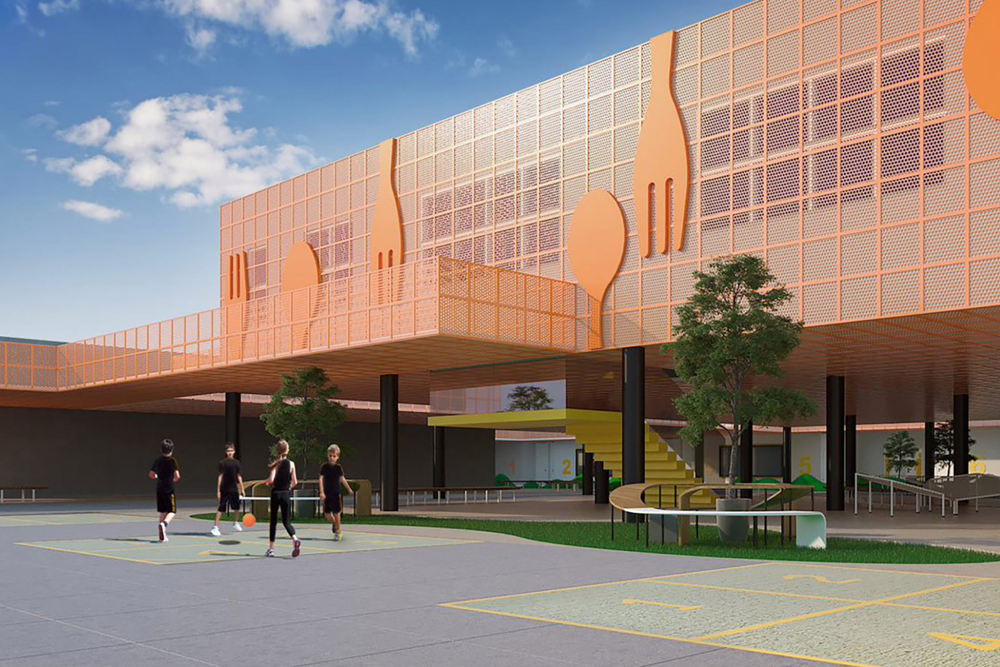
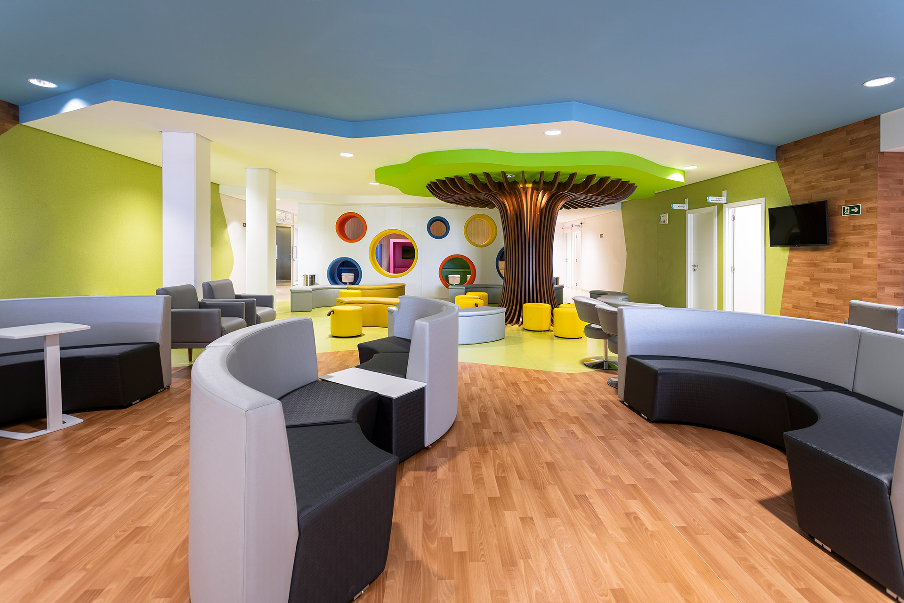
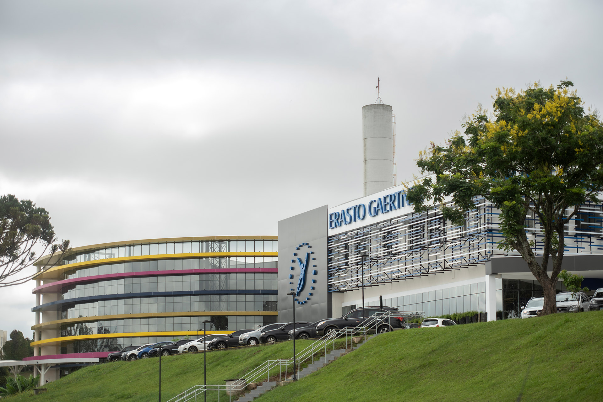

Conceito
Estratégia clara que organiza programa, fluxos e identidade a partir das demandas reais de cada cliente.

Projetos de alta performance e complexidade para hospitais, clínicas, laboratórios, centros médicos e escolas em Curitiba. Do planejamento à execução, com foco em bem-estar, generosidade e experiência humana.
Três pilares
A arquitetura é um instrumento fundamental no processo terapêutico. Cada projeto traduz cuidado em espaço, integrando biofilia, neuroarquitetura e design baseado em evidências.
Estratégia clara que organiza programa, fluxos e identidade a partir das demandas reais de cada cliente.
Luz natural, materiais acolhedores, biofilia e escolhas baseadas em evidências para ambientes que restauram.
Espaços generosos que acolhem pacientes, familiares, estudantes e equipes de trabalho com dignidade.
Portfólio por tipologia
Seleção de projetos publicados pela Sarnelli Arquitetura para hospitais, clínicas e escolas.

Saúde · Institucional
Projeto publicado no portfólio da Sarnelli para ampliação e qualificação de espaços de saúde, com atenção à experiência do paciente e aos fluxos assistenciais.
Solicitar informações
Centro médico
Centro médico com ambientes funcionais, acolhedores e preparados para alta demanda de atendimento em Curitiba.
Solicitar informaçõesHospital
Atuação publicada em projeto hospitalar de referência em Curitiba.
Educação
Ambientes de aprendizagem pensados para bem-estar, segurança e flexibilidade pedagógica.
Consultório · Clínica
Projetos sob medida para clínicas, consultórios e centros de atendimento especializado.
Do planejamento à execução
Cada etapa é conduzida para reduzir risco, garantir viabilidade e preservar a qualidade do espaço final.
Diagnóstico do programa, levantamento de necessidades, análise de fluxos e definição de diretrizes estratégicas.
Desenvolvimento do conceito, imagens, estudos e documentação para alinhamento e aprovação.
Acompanhamento da obra, detalhamento técnico e gestão para entregar o projeto como planejado.
Conte o tipo de unidade, a localidade e o estágio atual. Respondemos em até dois dias úteis.